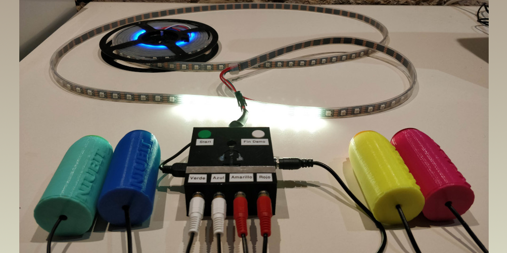

Robot Scara

Proyecto Zeus
Proyecto HiroBot

Proyecto Hormiga

Proyecto Drone

Bienvenido a la sección de proyectos activos de Robotech URJC.
Este proyecto tiene como objetivo desarrollar el código para que nuestro brazo SCARA pueda realizar operaciones complejas, manipular objetos, repetir movimientos e incluso jugar al ajedrez.
Ver en GitHubEn el proyecto Zeus tenemos como objetivo a largo plazo crear un robot humanoide en un proyecto totalmente OpenSource. Hemos centrado el desarrollo en el diseño de InMoov, adaptando hardware y desarrollando software propio. Actualmente contamos con las dos manos y antebrazos, y un software de visión artificial que permite mover las manos. El software de la mano está basado en Arduino, mientras que el de visión artificial usa Python y OpenCV.
Ver en GitHubPresentamos a HiroBot. Con este proyecto pretendemos hacer un robot con el fin de aprender a programar y aprender algo de robótica. La idea es crear un robot con forma similar a un tanque, con ruedas de oruga y un cañón láser, pero con un estilo amigable como Wall-E o el Rover de Planet 51. Desarrollamos una librería para Arduino para facilitar la programación y planeamos soporte para programación por bloques para los más pequeños. Incluye sensores de luz, ultrasonidos, IR y actuadores como motores y servos.
Ver en GitHubNuestro grupo, compuesto por personas de robótica, telecomunicaciones y aeroespacial, desarrolla un dron RC de 50 cm de envergadura. En la primera fase, nos enfocamos en pruebas de vuelo y control manual. En la segunda, integramos una Raspberry Pi para misiones programadas y desarrollamos un módulo de payload variable para diferentes misiones.
Ver en GitHubLed Race es un proyecto creado con una finalidad lúdica y competitiva. Una tira LED de NeoPixel y pulsadores son lo único necesario para jugar, ganando quien pulse más rápido para avanzar su LED.
Ver en GitHub